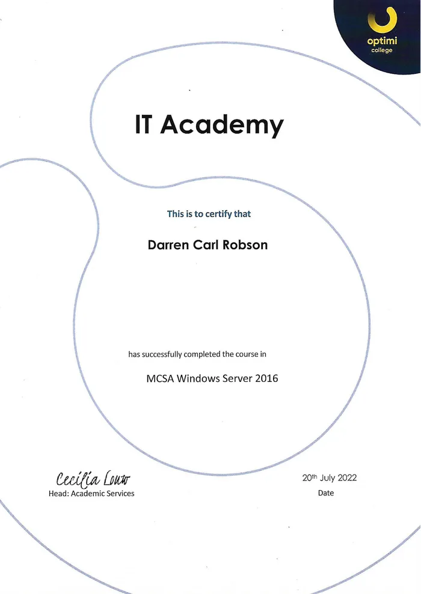

Skip to content
Darren Robson
All certifications
Certificate · IT Academy
MCSA Windows Server 2016
IT Academy course · July 2022
Download PDF
Open full-size PDF

Personal ID and student numbers have been removed from this certificate.